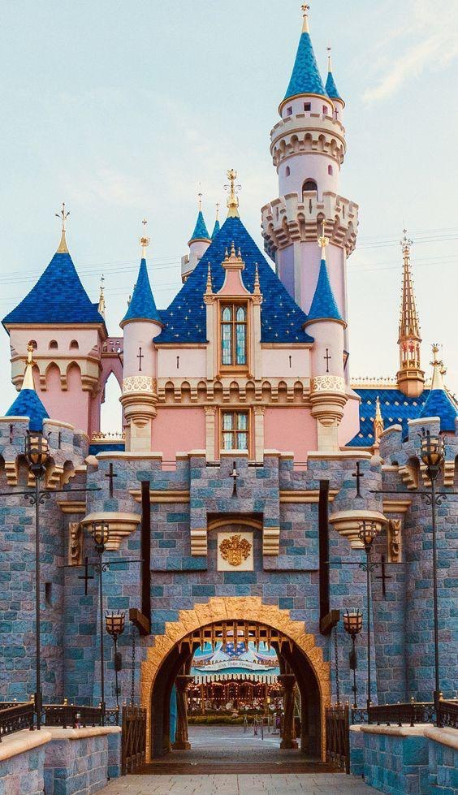
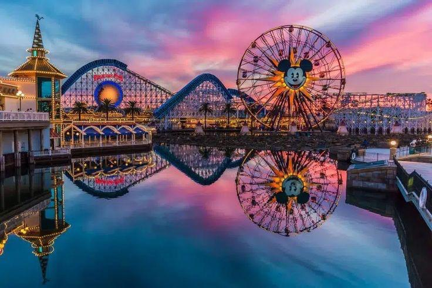
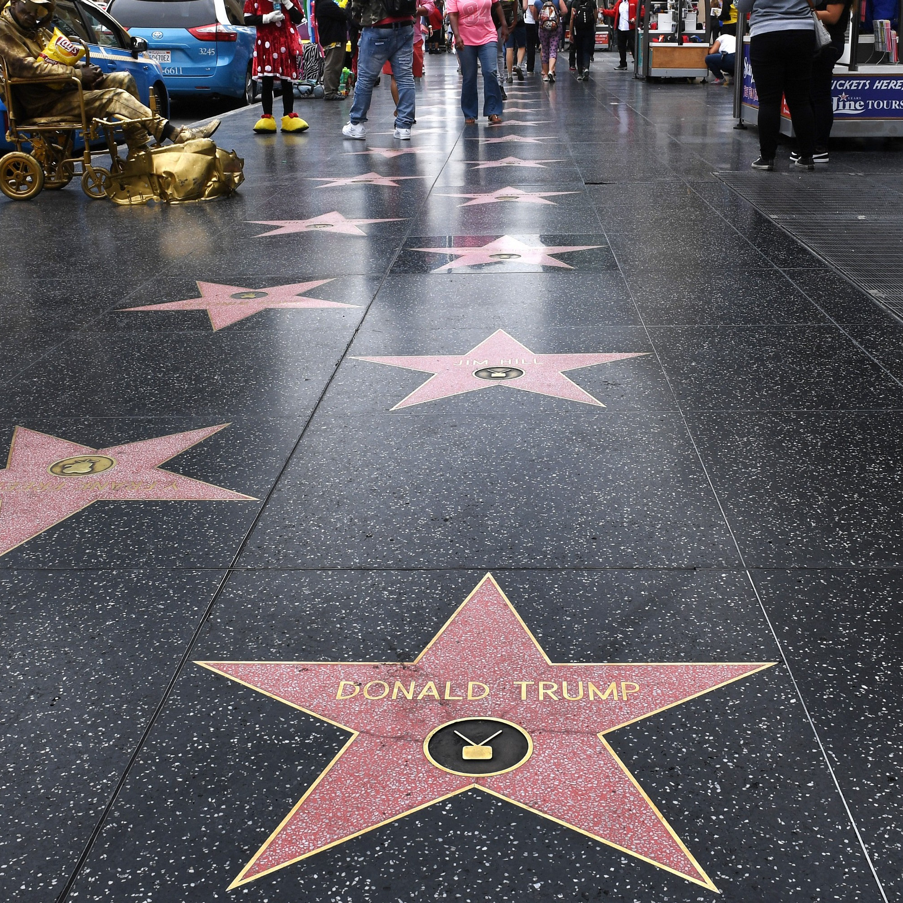
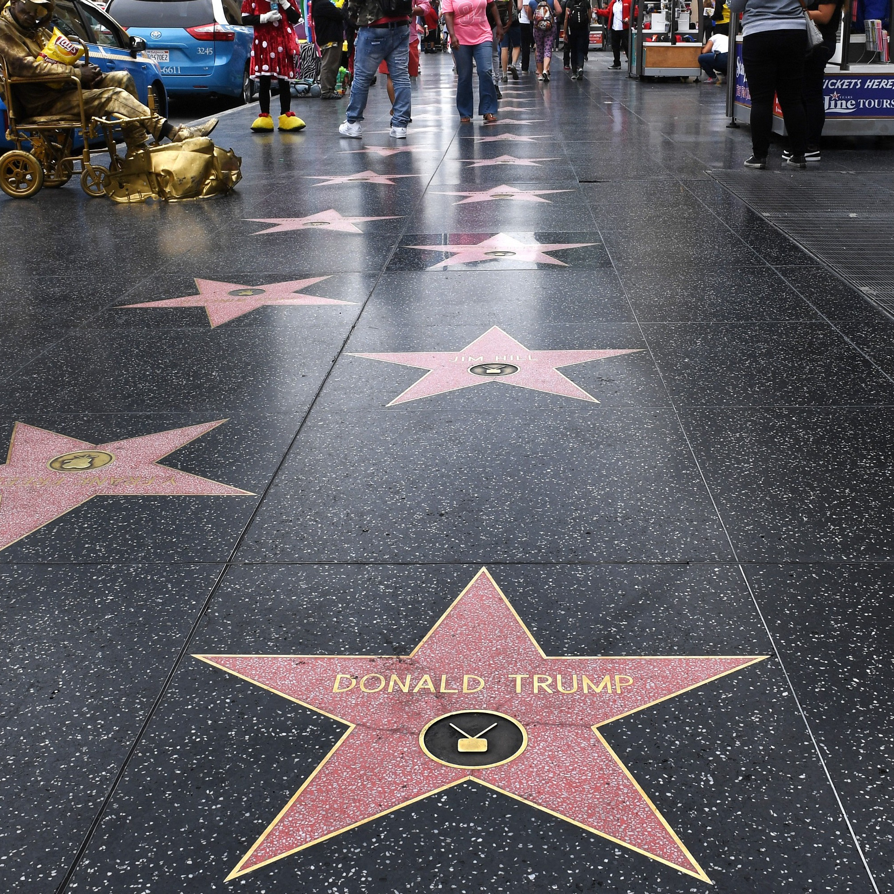
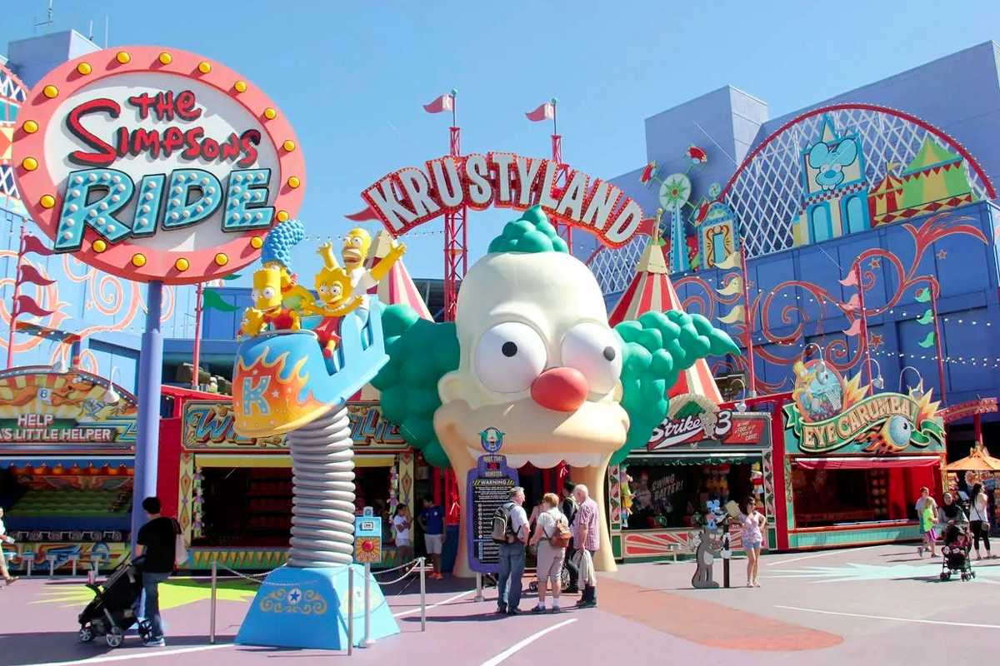
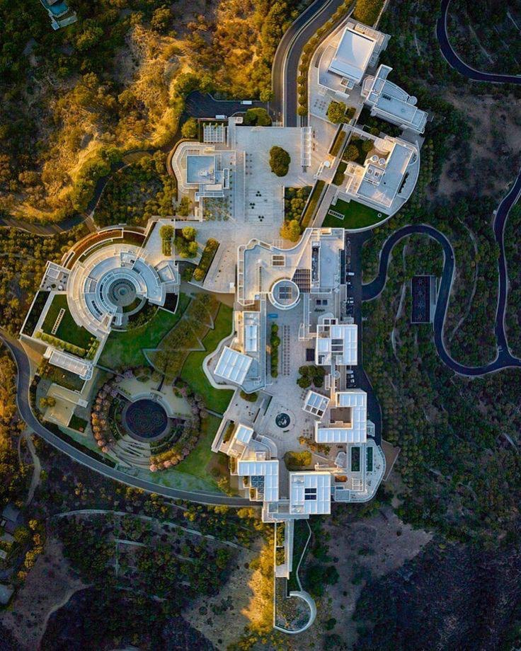

Los_Angeles
Surnommée la « cité des anges », Los Angeles est une mégalopole tentaculaire faite de multiples quartiers, sans réel centre-ville, située au sud de la Californie au bord de l’océan Pacifique. C’est la deuxième plus grande ville des Etats-Unis après New York et la plus peuplée.
Elle porte en elle une bonne part du rêve américain. Symbole de la Conquête de l’Ouest, elle est le point d’arrivée de la Route 66. Avec 320 jours de soleil par an au compteur, il y fait presque toujours un temps radieux !
Disneyland California:

Disneyland California est le seul parc d'attraction Disney a avoir été supervisé par son créateur. Depuis son ouverture en 1955, il a reçu plus de 700 millions de
C'est en 1955 que la magie de Disneyland a commencé à Los Angeles. Le parc à thème de Walt Disney s'étend rapidement ensuite à d'autres continents pour transporter la magie de Disney dans le monde entier : Disneyland Paris, Disneyland Tokyo, Disneyland Hong Kong, Disney World Orlando et Disneyland Shanghai.
Disneyland Park California est le parc le plus classique qui existe aujourd'hui. Certaines des attractions que nous pouvons voir aujourd'hui dans ce parc à thème de Los Angeles fonctionnent depuis plus de soixante ans.
Pendant tout ce temps, Disneyland a su se réinventer et améliorer ses installations sans pour autant laisser de côté l'atmosphère magique du parc.
Attractions les plus populaires:
-La maison de Minnie et Mickey : Disneyland Park vous donne l'occasion de rencontrer directement le personnage qui a lancé ce monde fantastique. Vous pourrez prendre des photos avec Mickey et Minnie et emporter avec vous un souvenir inoubliable de Disneyland.
-Buzz l'Éclair : cette attraction pleine de lumières LED et d'effets spéciaux vous permettra de tester votre adresse. Visez avec le canon laser et tirez !
-Alice au Pays des Merveilles : des effets spéciaux et des personnages en 3D vous transporteront dans le monde fantastique d'Alice grâce à l'une des plus anciennes et des plus célèbres attractions du parc.
-Indiana Jones Adventure : ce jeu interactif vous permettra de vous mettre dans la peau du plus célèbre explorateur de tous les temps et de tester votre intelligence. L'attraction idéale pour les petits et les grands.
-Dumbo, l'éléphant volant : c'est l'une des attractions qui est restée intacte depuis l'ouverture du parc Disneyland en 1955. Les plus petits pourront s'envoler au-dessus d'une fontaine grâce à Dumbo.

l’Hollywood Boulevard et le Walk of Fame:
 

Bien évidemment, Los Angeles est la ville de toutes les stars d’Hollywood : entre les villas et les piscines, il est impossible de ne pas s’intéresser un minimum à cet univers de strass et de paillettes. Avec ses fameuses étoiles sur son Walk of Fame, ses musées (Guinness World Records , Madame Tussauds Hollywood, etc…), ses cinémas, ses centres commerciaux gigantesques ou encore pour le Grauman’s Chinese Theatre, le Hollywood Boulevard est un lieu incontournable à visiter à Los Angeles ! Vous serez amusé, le nez rivé sur le sol, à découvrir quelle star se cache derrière chaque étoile.
Situé au bout du célèbre Hollywood Boulevard, le théâtre Dolby (anciennement théâtre Kodak) est aujourd’hui réputé pour accueillir chaque année la prestigieuse cérémonie des Oscars. Marchez vous aussi sur le tapis rouge, imaginez les badauds s’entasser les uns sur les autres pour jouer les paparazzis d’un jour.
Universal Studios Hollywood:


Pour plonger dans la magie hollywoodienne et vivre une expérience unique, rien de mieux que de visiter les Universal Studios Hollywood. Préparez-vous car vous cette visite ne consiste pas à un enchaînement de décors commentés par un guide. Non, visiter les Universal Studios Hollywood, c’est découvrir un parc d’attractions sur le thème du cinéma, avec des manèges, attractions et animations liées aux productions des Universal Studios ! S’il existe bien un tour des studios, votre journée ne se résumera pas qu’à cette visite : vous pourrez réellement vivre l’expérience cinéma grâce aux nombreuses attractions de ce lieu mythique.
Histoire des Universal Studios Hollywood à Los Angeles:
Créés en 1915, les studios Universal sont ceux d’Universal Pictures, un des studios les plus prolifiques et connus du cinéma ! Parmi les plus grands succès et productions tournés aux Universal Studios se trouvent les films Retour vers le Futur, Jurassic Park, La Momie ou encore King Kong.
Dès 1964, les studios situés à Universal City accueillent une visite organisée dans le but de dynamiser la firme. Peu à peu, le parc a pris forme avec l’ajout de différentes nouvelles attractions et animations. Aujourd’hui, c’est un des parcs d’attractions à thème les plus visités avec plus de 90 millions de visiteurs depuis sa création !
Que voir et faire aux Universal Studios Hollywood ?
Les attractions dans le parc Universal Studios Hollywood sont séparées en deux parties par une série d’escalators : Upper Lot et Lower Lot. C’est à l’étage supérieur que se trouve les deux principales attractions du parc : le Studio Tour et le monde d’Harry Potter.
Le premier est un incontournable des Universal Studios Hollywood et vous plongera dans les entrailles du studio, là où travaille les acteurs et techniciens. Cette visite d’une heure est un véritable spectacle puisque vous aurez droit à de superbes animations entre chaque changement de scènes et décors. Assis dans un petit train, vous plongerez petit à petit dans la conception, les effets spéciaux et les décors des plus grands succès des Universal Studios !
Dans le monde d’Harry Potter, une ballade stupéfiante vous attend tout d’abord dans le village, où vous serez plongé dans l’univers des sorciers avec entre autres : des maisons aux toits biscornus, la boutique de baguettes magiques d’Ollivander ou la locomotive du Poudlard Express ! Deux superbes attractions se trouvent dans cet univers : Harry Potter et le voyage interdit, une plongée sensationnelle dans les 7 épisodes du la saga, et une attraction pour les plus jeunes.
Mais le parc regorge d’autres excellentes attractions, comme la Walking Dead Attraction, le grand 8 en intérieur Revenge of the Mummy, Transformers : The Ride 3D avec son expérience immersive excitante et unique, le WaterWorld ou bien une attraction 3D sur le thème des Minions de Moi, Moche et Méchant ! De nombreuses autres attractions sur le thème des Simpsons, Jurassic Park et autres sont également à découvrir pendant votre visite des Universal Studios Hollywood

Getty Center:

Le Centre Getty est un impressionnant campus culturel inauguré en 1997, remarquable pour ses œuvres d'art et la majestuosité de l'espace
Avec une situtation géographique privilégiée, au sommet d'un des Monts Santa Monica, le Getty Center est un complexe moderniste en marbre travertin, crée à partir de la collection privée et des donations de l'empresario et philantrope J. Paul Getty.
Parcourir le Centre Getty:
En arrivant dans le centre, vous pourrez prendre un tramway qui vous amènera jusqu'à un parking au sommet de la colline. Le tramway est une attraction à lui tout seul et pendant le trajet vous aurez une vue incroyable sur la ville.
Une fois arrivés au sommet, vous serez sûrement d'abord impressionnés par les 16 000 tons de beige du marbre utilisé pour le bâtiment. L'architecte voulait transmettre à ses visiteurs une impression de solidité, de sensiblité et de qualité. Le marbre reflète toute la lumière du soleil de Californie et il contraste avec les éléments convexes du design des bâtiments ainsi qu'avec les jardins très entretenus du complexe.
Tout au long des différentes salles du complexe, vous pourrez accéder à des collections de peintures et à des sculptures italiennes, françaises, des Pays-Bas, d'Espagne et d'Angleterre. Vous pourrez voir les œuvres d'artiste comme Léonard de Vinci, Goya, Klimt, Rodin, Rembrandt, Manet, Monet, Munch, Van Gogh, Cézanne, Van Dyck, Gauguin ou El Greco. Quelle diversité !
Les jardins du centre sont également une œuvre d'art, en constante évolution qui ravit les visiteurs avec des centaines d'espèces différentes de fontaines et de ruisseaux et même un lac naturel dont l'aspect change chaque jour.
.JPG)
Beverly Hills:

Beverly Hills est sûrement le quartier le plus riche et le mieux protégé de toute la ville. Lieu où résident de nombreuses stars, ce n’est cependant pas un spot très intéressant si vous ne portez pas beaucoup d’attention aux célébrités du cinéma. Chaque villa est protégée par d’immenses haies ou palissades qui dissimulent et protègent l’intimité des « people ». Toutefois, n’hésitez pas à demander une carte auprès de l’office de tourisme pour faire un petit pèlerinage et qui sait, vous pourriez tomber nez à nez avec votre actrice préférée ?